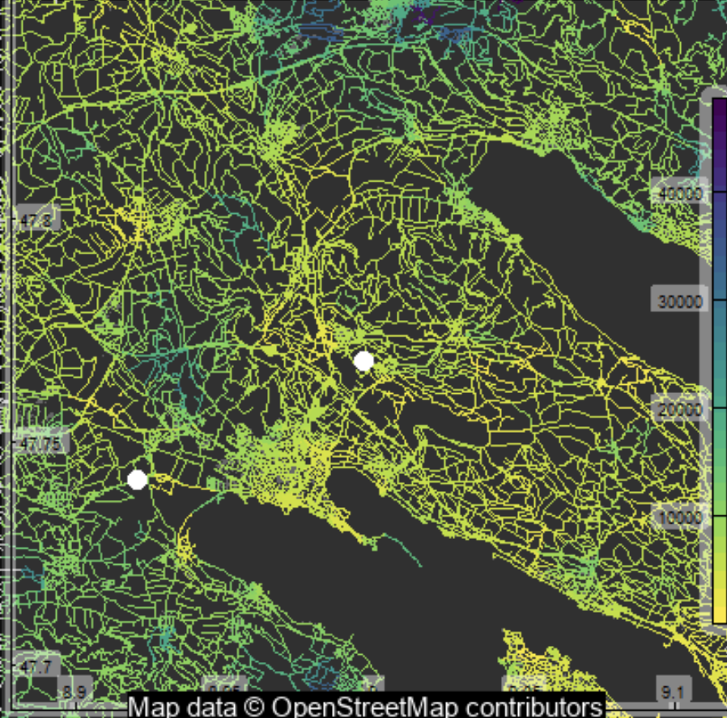
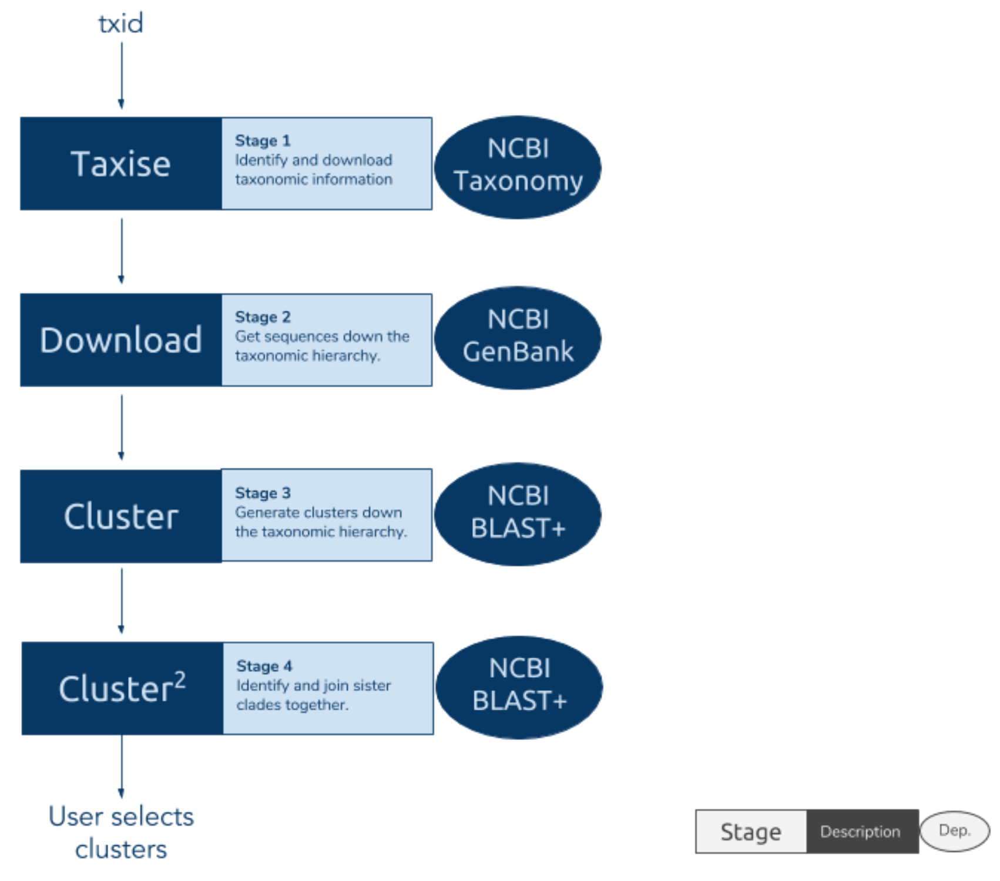
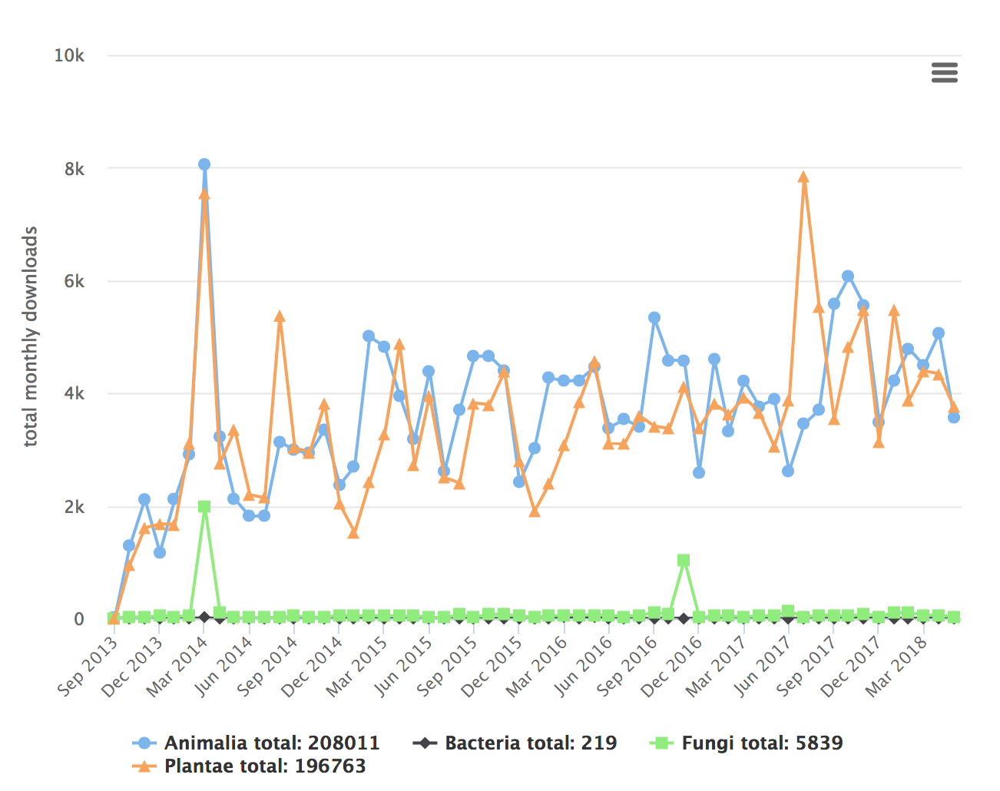

Aug 20, 2018
rOpenSci HQ
The rOpenSci team will be at a number of upcoming events:
- Aug 27-30, Dunedin, New Zealand, Scott Chamberlain, Biodiversity Information Standards Meeting (TDWG)
- Sep 3-7, Buenos Aires, Argentina, Jenny Bryan and Maëlle Salmon (remote), LatinR meeting
- Sep 11, Radolfzell, Germany, Maëlle Salmon, AniMove meeting
- Sep 12-14, The Hauge, Netherlands, Jeroen Ooms, Use of R in Official Statistics (uRos2018)
Software 📦
CRAN:  GitHub:
GitHub: 
New packages
- The first version (
v0.0.1) ofarkdbis on CRAN - archive and unarchive databases as flat text files. Check out the docs to get started.

- The first version (
v0.15.1) ofDataPackageRis on CRAN - an R package to enable reproducible data processing, packaging and sharing. Check out the vignettes to get started.
New versions
- A new version (
v1.2.2) ofGSODRis on CRAN - Global Surface Summary of the Day (GSOD) Weather Data from R. See the release notes for changes. Checkout the GSODR docs to get started.
bug 🐛 fixes
- A new version (
v1.0.6) ofhelminthRis on CRAN - Access London Natural History Museum Host-Helminth Record Database. See the release notes for changes. Checkout the helminthR vignette to get started.
bug fix
- A new version (
v0.3.0) ofbomrangis on CRAN - Australian Government Bureau of Meteorology (BOM) Data from R. See the release notes for changes. Checkout the bomrang docs to get started.
new function
get_coastal_forecast() - A new version (
v0.8.4) ofrplosis on CRAN - Interface to the Search API for Public Library of Science journals. See the release notes for changes. Checkout the rplos vignettes to get started.
docs updates,
searchplos()bug fix, make sure to update - A new version (
v2.1.2) ofRNeXMLis on CRAN - Semantically Rich I/O for the NeXML Format. See the NEWS for changes. Checkout the RNeXML vignettes to get started.
fix for failing CRAN checks
- A new version (
v2.3) oftesseractis on CRAN - R bindings to the Open Tesseract Open Source OCR Engine. See the release notes for changes. Checkout the tesseract vignette to get started.
fixed problem with
setlocale() - A new version (
v0.8.2) ofhddtoolsis on CRAN - Hydrological Data Discovery Tools. Checkout the hddtools vignette to get started. - A new version (
v2.5.5) ofFedDatais on CRAN - get geospatial data from several federated government data sources. See the NEWS for changes. Checkout the FedData README to get started.
fixed issue with NLCD data processing
- A new version (
v0.3.1) oftaxais on CRAN - taxonomic classes for groupings of taxonomic names without data, and those with data. See the NEWS for changes. Checkout the taxa vignette to get started.
new fxns
taxonomy_table(),print_tree()& many improvements - A new version (
v0.5.2) ofroadoiis on CRAN - find free versions of scholarly publications via Unpaywall. See the NEWS for changes. Checkout the roadoi vignette to get started.
fix example, change to email address handling
- A new version (
v5.4.0) ofdrakeis on CRAN - a pipeline toolkit for reproducible computation at scale. See the release notes for changes. Checkout the drake docs to get started.
overhauled trigger interface; docs changes; refactor igraph attributes; enable
vis_drake_graph()andsankey_drake_graph() - A new version (
v0.8.4) ofrcrossrefis on CRAN - R client for the Crossref API. See the release notes for changes. Checkout the rcrossref vignette to get started.
RStudio Addin can now search by article metadata; can set custom base URL for
cr_cn(); many improvements and bug fixes
Software Review ✔
We accept community contributed packages via our onboarding system - an open software review system, sorta like scholarly paper review, but way better. We’ll highlight newly onboarded packages here. A huge thanks to our reviewers, who do a lot of work reviewing (see the blog post on our review system), and the authors of the packages!
If you want to be a reviewer fill out this short form, and we’ll ping you when there’s a submission that fits in your area of expertise.
The following three packages recently went through our onboarding process and have been approved!
- smapr > Acquisition and Processing of NASA Soil Moisture Active-Passive (SMAP) Data
- Author: Maxwell Joseph
- Issue: ropensci/onboarding#231
- Reviewers:
- DataPackageR > Construct Reproducible Analytic Data Sets as R Packages
- Author: Greg Finak
- Issue: ropensci/onboarding#230
- Reviewers:
- infx > OpenBIS API access to the InfectX data repository
- Author: Nicolas Bennett
- Issue: ropensci/onboarding#218
- Reviewers:
The following two packages were recently submitted:
- colocr > Conduct Co-localization Analysis of Fluorescence Microscopy Images
- Author: Mahmoud Ahmed
- Issue: ropensci/onboarding#243
- Reviewers:
- rcites > R Interface to the Species+ Database
- Author: Jonas Geschke
- Issue: ropensci/onboarding#244
- Reviewers:
- Noam Ross
- other reviewer not assigned yet
On the blog
Software Review / Onboarding
Matthew Strimas-Mackey wrote a post about their recently rOpenSci reviewed package auk: Extracting and Processing eBird Data. The review: ropensci/onboarding#136

Animal Movement series
We’re doing a series of posts corresponding to the material for a talk Maëlle will give at the Animal Movement Analysis summer school in Radolfzell, Germany on September the 12th, in a Max Planck Institute of Ornithology. Here’s the first:
Where to go observe birds in Radolfzell? An answer with R and open data

Technotes
Dom Bennett wrote about a new package: phylotaR: Retrieve Orthologous Sequences from GenBank.

Jeroen Ooms wrote about a new version of mongolite: Mongolite 2.0: GridFS, connection pooling, and more.
Use cases
The following 12 works use/cite rOpenSci software:
- Krah et al. used rusda in their paper Evolutionary dynamics of host specialization in wood-decay fungi 1
- Babcock et al. used rfishbase in their paper Fish community and single-species indicators provide evidence of unsustainable practices in a multi-gear reef fishery 2
- Almeida et al. used skimr in their paper Alcohol Expectancy-Adolescent Questionnaire (AEQ-AB): Validation for portuguese college students 3
- García et al. used textreuse in their paper Locating similar names through locality sensitive hashing and graph theory 4
- Abolaffio et al. used rerddap in their paper Olfactory-cued navigation in shearwaters: linking movement patterns to mechanisms 5
- Pierson used rnoaa in their thesis Flow From Flexibility: Identifying Opportunities For Streamflow Restoration in a Transboundary Municipal Watershed Through Water Budgeting 6
- Locard-Paulet et al. used plotly in their paper VisioProt-MS: interactive 2D maps from intact protein mass spectrometry 7
- Lortie et al. used rgbif in their paper Better late than never: a synthesis of strategic land retirement and restoration in California 8
- Van Gemert & Andersen rfishbase in their paper Challenges to fisheries advice and management due to stock recovery 9
- Tsuboi et al. used taxize in their paper Breakdown of brain–body allometry and the encephalization of birds and mammals 10
- Horvatić et al. used plotly in their paper Quantitative proteomics using tandem mass tags in relation to the acute phase protein response in chicken challenged with Escherichia coli lipopolysaccharide endotoxin 11
- Samy et al. used spocc in their paper Mapping the potential distributions of etiological agent, vectors, and reservoirs of Japanese Encephalitis in Asia and Australia 12
In the news
Jorge López shared an example of how to use ckanr to extract data from Open Data Bacelona (code shared in a gist)
Very quick example of how to use the CKAN API in R to extract data from Open Data Bcn (open data service from @bcn_ajuntament). It shows a plot with the number of visitors at the main libraries in Barcelona (2016). #rstats
— Jorge López (@jlopezper) July 25, 2018
Code: https://t.co/oWb9AGV3Of pic.twitter.com/cY3ZHTxgu7
Two packages by Dmytro Perepolkin use rOpenSci packages:
- polite uses our robotstxt package to help promote responsible web etiquette when web scraping
- hocr uses our tesseract package to do post-processing of hOCR files into tidy formats
In a blog post John Waller wrote about GBIF download trends and used rgbif to collect the data from GBIF. It includes a Shiny app you can use to explore the data interactively.

Dan Olner shared a plot showing use of our bib2df package for parsing BibTeX files to a tibbles
Fun with @0ttlngr 's bib2df package. Think I might be a geographer... #R https://t.co/dpFlcdrS9k pic.twitter.com/LFDLAYoyX4
— Dan Olner (@DanOlner) August 10, 2018
At the recent Author Carpentry meeting a workshop was run using rorcid
Props to @rOpenSci for the rorcid pkg which we used at #fsci2018 and #DataTrieste18 to autopopulate our biosketches included in our reproducible reports created w/ Rmarkdown + knitr. @AuthorCarpentry lesson online &ready for forking at https://t.co/PKASSuIBd0 #rstats @ORCID_Org
— Gail (((Clement))) (@Repositorian) August 10, 2018
Keep up with rOpenSci
- Mailing list: Sign up with an email address to get this newsletter sent to your inbox -> ropensci.org/#subscribe
- Alternatively, you can subscribe to this newsletter via our XML feed at https://news.ropensci.org/feed.xml or our JSON feed at https://news.ropensci.org/feed.json
- rOpenSci on Twitter: @ropensci
- The rOpenSci blog at ropensci.org/blog - you can subscribe in any RSS aggregator, or manually via https://ropensci.org/feed.xml. We also announce new blog posts on our Twitter account.
Footnotes
-
Krah, F.-S., Bässler, C., Heibl, C., Soghigian, J., Schaefer, H., & Hibbett, D. S. (2018). Evolutionary dynamics of host specialization in wood-decay fungi. BMC Evolutionary Biology, 18(1). https://doi.org/10.1186/s12862-018-1229-7 ↩
-
Babcock, E. A., Tewfik, A., & Burns-Perez, V. (2018). Fish community and single-species indicators provide evidence of unsustainable practices in a multi-gear reef fishery. Fisheries Research, 208, 70–85. https://doi.org/10.1016/j.fishres.2018.07.003 ↩
-
Almeida, L. S., Pérez Fuentes, M. del C., Casanova, J. R., Gázquez Linares, J. J., & Molero Jurado, M. del M. (2018). Alcohol Expectancy-Adolescent Questionnaire (AEQ-AB): Validation for portuguese college students. Health and Addictions/Salud y Drogas, 18(2), 155. https://doi.org/10.21134/haaj.v18i2.389 ↩
-
García, F. T., Villalba, L. J. G., Orozco, A. L. S., Ruiz, F. D. A., Juárez, A. A., & Kim, T. H. (2018). Locating similar names through locality sensitive hashing and graph theory. Multimedia Tools and Applications, 1-14. https://link.springer.com/article/10.1007/s11042-018-6375-9 ↩
-
Abolaffio, M., Reynolds, A. M., Cecere, J. G., Paiva, V. H., & Focardi, S. (2018). Olfactory-cued navigation in shearwaters: linking movement patterns to mechanisms. Scientific Reports, 8(1). http://doi.org/10.1038/s41598-018-29919-0 ↩
-
Pierson, J. S. (2018). Flow From Flexibility: Identifying Opportunities For Streamflow Restoration in a Transboundary Municipal Watershed Through Water Budgeting. Masters Thesis. https://ir.library.oregonstate.edu/downloads/mw22vb77w ↩
-
Locard-Paulet, M., Parra, J., Albigot, R., Mouton-Barbosa, E., Bardi, L., Burlet-Schiltz, O., & Marcoux, J. (2018). VisioProt-MS: interactive 2D maps from intact protein mass spectrometry. Bioinformatics. https://doi.org/10.1093/bioinformatics/bty680 ↩
-
Lortie, C. J., Filazzola, A., Kelsey, R., Hart, A. K., & Butterfield, H. S. (2018). Better late than never: a synthesis of strategic land retirement and restoration in California. Ecosphere, 9(8), e02367. https://doi.org/10.1002/ecs2.2367 ↩
-
Van Gemert, R., & Andersen, K. H. (2018). Challenges to fisheries advice and management due to stock recovery. ICES Journal of Marine Science. https://doi.org/10.1093/icesjms/fsy084 ↩
-
Tsuboi, M., van der Bijl, W., Kopperud, B. T., Erritzøe, J., Voje, K. L., Kotrschal, A., … Kolm, N. (2018). Breakdown of brain–body allometry and the encephalization of birds and mammals. Nature Ecology & Evolution. https://doi.org/10.1038/s41559-018-0632-1 ↩
-
Horvatić, A., Guillemin, N., Kaab, H., McKeegan, D., O’Reilly, E., Bain, M., … Eckersall, P. D. (2018). Quantitative proteomics using tandem mass tags in relation to the acute phase protein response in chicken challenged with Escherichia coli lipopolysaccharide endotoxin. Journal of Proteomics. https://doi.org/10.1016/j.jprot.2018.08.009 ↩
-
Samy, A. M., Alkishe, A. A., Thomas, S., Wang, L., & Zhang, W. (2018). Mapping the potential distributions of etiological agent, vectors, and reservoirs of Japanese Encephalitis in Asia and Australia. Acta Tropica. https://doi.org/10.1016/j.actatropica.2018.08.014 ↩